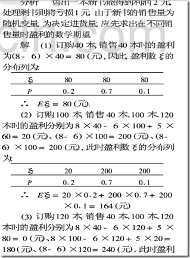
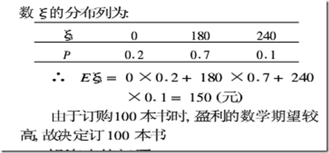
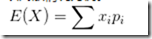
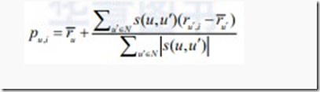
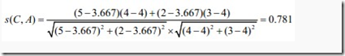
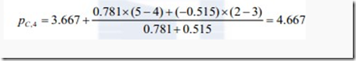
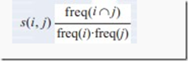
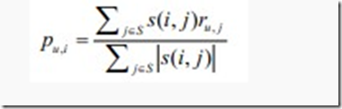

Correlation
转自 DM张朋飞 CNBlogs
数学期望的理解
微笑早些时候，法国有两个大数学家，一个叫做布莱士·帕斯卡，一个叫做费马。帕斯卡认识两个赌徒，这两个赌徒向他提出了一个问题。他们说，他俩下赌金之后，约定谁先赢满5局，谁就获得全部赌金。赌了半天，A赢了4局，B赢了3局，时间很晚了，他们都不想再赌下去了。那么，这个钱应该怎么分？是不是把钱分成7份，赢了4局的就拿4份，赢了3局的就拿3份呢？或者，因为最早说的是满5局，而谁也没达到，所以就一人分一半呢？这两种分法都不对。正确的答案是：赢了4局的拿这个钱的3/4，赢了3局的拿这个钱的1/4。
为什么呢？假定他们俩再赌一局，A有1/2的可能赢得他的第5局，B有1/2的可能赢得他的第4局。若是A赢满了5局，钱应该全归他；若B赢得他的第4局，则下一局中A、B赢得他们各自的第5局的可能性都是1/2。所以，如果必须赢满5局的话，A赢得所有钱的可能为1/2+1/2×1/2=3/4,当然，B就应该得1/4。
数学期望由此而来。
微笑为什么写这个呢？因为我发现协同过滤里很多公式的分子是权值和值成绩的连加和，分母是权值之和(实际上就是加权平均)，如果分开看，不就是概率(看作是权值的归一化处理，这样就满足了相加为1的性质，那么肯定是概率了)乘以值的连加和么。
期望(Expected-Value)就是概率和价值量乘积的累加和。
微笑认识的误区。
- 数学期望是当事人心理上最愿意或最现实的获利。和汉语理解混淆，如：某A罚球命中率0.6，中的1分，不中0分，那么投一次，得分的期望是1或0(我期望投中，我肯定投不中)。解析：概率值会影响期望的，这就是没考虑概率。数学期望简称期望，以后还是只叫数学期望吧。
- 实际发生概率最大的获利。咱们ABCD一般选择呢BC作为正确答案。0.1A，0.9B，那么一定选B么？
- 可能发生的获利的平均值。
笔者一直认为是第三个,为什么这么理解呢？定义上说期望反映了离散型随机变量的取值的平均水平，或许我对第三个的理解有误，或许是说只是平均值，没有乘以概率。
微笑例题解析
某书店计划订购一本新版书，根据以往经验来预测，这本新书销量为40本，100本，120本的概率为0.2,0.7,0.1，这本书的订购价位6元，销售价位8元，如果当时兽不出，只能以每本5元的价格作为剩书处理。请帮助店主决策应订购多少本新书较为合理。
解答：如果我高中的时候应该做得出来，现在看到竟然没有思路，百度到解答后我认为我忽略了一个重要隐含条件，那就是40,100,120本的概率和为1，这说明了什么问题呢？那就是只会售出这三种情况，不会售出41,101,119本等等等等的情况。


解答完毕之后我反而认为第一种解释是期望的解释，看来这道题起到了反作用。
掷一次骰子，得到的点的期望是1/6(6(1+6)/2)=3.5，为什么出现小数呢？
微笑看了半天，还是没解决我的问题。
我去知乎社区查了查，得到如下一个问题，以及相关回复。
数学期望也有翻译成”预期“的，在一些研究中，例如资产定价理论里，几乎是把这个数学上的”预期“和人心理上对资产价格的”预期“等同了。但看这个例子：扔一个均匀硬币，正面+1分反面-1分，则数学“预期”是0，但是每个人都知道结果只可能是+1或者-1，不可能是0，自然不会有人”预期“结果是0分。
总之，谁能给数学期望一个直觉上容易接受的解释吗？ - 简而言之，甜甜圈的重心也不在甜甜圈里。
- 可以理解为实验结果用概率进行加权得到的预期。在大量试验之后，实验结果的平均值会向期望靠近。
- 先上总结，期望是基于概率基础的，是对未知的预期。TZ应该分清楚一次的实际结果和你预期的结果两者的区别。以离散情况为例。 
你首先是已知在每一状态i下的取值x{i}，以及概率p{i}。然后你才能推断出期望。而概率在大多出情况下是由频数近似而来的。频数就是在事件发生的次数/实验的总次数。在这个定义中，就已经隐藏了大样本的条件了。因而，期望就是在多次实验之后，你预期的结果。而不是你下一次，或者某次实验的结果。 - 样本容量等于总体时的概率值，也就是说期望是概率下的值，与某一次无关。
- 我认为@He Jingyu 的答案不完全准确，并且第一句就误导了知友。期望Expectation，是由概率密度函数定义的，手机就不给公式了。是讲一个变量所符合的分布的特性。均值Mean，是样本的特性，假设一组分布未知的样本，均值仍然是可以计算的。更极端一点，这几个样本分布特性并不一样，仍然可以求出均值。
为什么这两个概念会经常混淆呢？ - 看了如上的回答，都没有很本质的回答这个问题，诸如平均啊什么的，觉得中学生都能理解，题主肯定也明白。。基于我正在玩手机，只能简单谈下这个问题。数学期望本身并不是一个平均数，也是一个随机变量。从统计角度，一个基于样本的无偏估计。从概率角度，需要定义事件的集合，sigma域，测度等。期望这个随机变量就是各个随机变量在其生成sigma域上的最佳逼近元。
微笑感觉知乎就是属于高端社区，每个人发的都是自己的见解，不是ctrl+c和ctrl+v。
微笑我这个问题很幼稚吗？我不这么认为，看PCA和LDA时我查看了矩阵，发现Google把CSDN的一个MVP和矩阵联系在了一起，文章叫《理解矩阵》，把矩阵看成一种变换，共三片，前后花了2年时间完成(ps:看完之后我还是不太理解，主要是方差什么的不知道其工程意义)。这两者不是很相似么？
皮尔逊相关系数的理解
我想知道的是皮尔逊公式为为什么值域在-1到1(怎么只管看出来或者理解出来)，公式为什么这么表达？只有理解了，才能提出自己的相关系数公式。
我想起了高中物理话U-I图，老师说最接近两遍点的直线，大学了知道是最小二乘法，那么最小二乘得出的直线两侧的点的皮尔逊相关系数应该与直线的斜率有某种联系吧，或者说一个可以作为度量另一个的标准，数学大神请关注。
微笑当两个变量的标准差都不为零时，相关系数才有定义，皮尔逊相关系数适用于：
- 两个变量之间是线性关系，都是连续数据。
- 两个变量的总体是正态分布，或接近正态的单峰分布。
- 两个变量的观测值是成对的，每对观测值之间相互独立。
从上面看出，基于用户的协同过滤是不是不该用皮尔逊相关系数，除了第二个条件不确定(莫非每个物品被购买的总数服从正态分布)。
微笑Matlab里使用corr(x,y)函数。
微笑定理： | ρXY | = 1的充要条件是，存在常数a，b，使得P{Y=a+bX}=1；可以看出皮尔逊衡量的是两组数据的线性相关程度。
微笑需要指出的是，相关系数有一个明显的缺点，即它接近于1的程度与数据组数n相关，这容易给人一种假象。因为，当n较小时，相关系数的波动较大，对有些样本相关系数的绝对值易接近于1；当n较大时，相关系数的绝对值容易偏小。特别是当n=2时，相关系数的绝对值总为1。因此在样本容量n较小时，我们仅凭相关系数较大就判定变量x与y之间有密切的线性关系是不妥当的。
这是14号补充上去的。
按照高中数学水平来理解, 它很简单, 可以看做将两组数据首先做Z分数处理之后, 然后两组数据的乘积和除以样本数。Z分数一般代表正态分布中, 数据偏离中心点的距离.等于变量减掉平均数再除以标准差.(就是高考的标准分类似的处理)。标准差则等于变量减掉平均数的平方和,再除以样本数,最后再开方.所以, 根据这个最朴素的理解,我们可以将公式依次精简为:
Z值的量代表着原始分数和母体平均值之间的距离，是以标准差为单位计算。在原始分数低于平均值时Z则为负数，反之则为正数。标准分数可以回答这样一个问题：”一个给定分数距离平均数多少个标准差?”在平均数之上的分数会得到一个正的标准分数，在平均数之下的分数会得到一个负的标准分数。
标准分数是一种可以看出某分数在分布中相对位置的方法。标准分数能够真实的反应一个分数距离平均数的相对标准距离。如果我们把每一个分数都转换成标准分数，那么每一个标准分数会以标准差为单位表示一个具体分数到平均数的距离或离差。将成正态分布的数据中的原始分数转换为标准分数，我们就可以通过查阅标准分数在正态曲线下面积的表格来得知平均数与标准分数之间的面积，进而得知原始分数在数据集合中的百分等级。
一个数列的各标准分数的平方和等于该数列数据的个数，并且标准分数的标准差和方差都为1。均值为0。
例如：某中学高（1）班期末考试，已知语文期末考试的全班平均分为73分，标准差为7分，甲得了78分；数学期末考试的全班平均分为80分，标准差为6.5分，甲得了83分。甲哪一门考试成绩比较好？
因为两科期末考试的标准差不同，因此不能用原始分数直接比较。需要将原始分数转换成标准分数，然后进行比较。Z(语文)=(78-73)/7=0.71 Z(数学)=(83-80)/6.5=0.46 甲的语文成绩在其整体分布中位于平均分之上0.71个标准差的地位，他的数学成绩在其整体分布中位于平均分之上0.46个标准差的地位。由此可见，甲的语文期末考试成绩优于数学期末考试成绩。
由于标准分数不仅能表明原始分数在分布中的地位，它还是以标准差为单位的等距量表，故经过把原始分数转化为标准分数，可以在不同分布的各原始分数之间进行比较。基于用户的协同过滤算法
对协同过滤不是很了解的请看笔者这一篇(超链接)。
基于用户（User-Based）的协同过滤算法首先要根据用户历史行为信息，寻找与新用户相似的其他用户；同时，根据这些相似用户对其他项的评价信息预测当前新用户可能喜欢的项。给定用户评分数据矩阵R，基于用户的协同过滤算法需要定义相似度函数s:U×U→R，以计算用户之间的相似度，然后根据评分数据和相似矩阵计算推荐结果。
在协同过滤中，一个重要的环节就是如何选择合适的相似度计算方法，常用的两种相似度计算方法包括皮尔逊相关系数和余弦相似度等。
这两种方法能用在基于物品的协同过滤算法里么？笔者认为不能，为什呢？请思考该从哪得到关于物品的两组向量呢？物品顶多是销售了多少，要响亮的话必须要和特定用户联系起来了，我感觉是这样，却从没见过有人这么用，哈哈。
另一个重要的环节就是计算用户u对未评分商品的预测分值。首先根据上一步中的相似度计算，寻找用户u的邻居集N∈U, 其中N表示邻居集，U表示用户集。然后，结合用户评分数据集，预测用户u对项i的评分，计算公式如下所示：

我对于上面这个公式的理解：用户u对未购买的物品j的评分为用户u对除了j以外的物品集{N-j}评分的均值(那么问题来了，如果u还对N中的其它物品没评分，怎么办？笔者的那一片文章用的是0表示，不过笔者直观的感觉是应该有其他的有效算法，紧邻下文的步骤一(寻找用户C的邻居)不知道的话不用该数据，哎哎哎，真不严谨)加上以TopK用户u’与用户u之间的相似性来加权平均用户u’对j的评分与用户u’评分的均值之差。
笔者感觉笔者写的上面的句子好繁琐，半年过后，笔者没有信心仅仅根据这句话写出公式，哈哈。
这个图不太清晰，不过没关系，只需要看是否带撇，然后结合下面的例子就行了，看完这个公式我知道我那篇文章为什么错了，就在于我最后求推荐物品的次序是直接把TopK用户中买过这件物品的用户与待被推荐用户之间的相关性加起来，然后排序了。
其中，s(u, u’)表示用户u和用户u’的相似度。
假设有如下电子商务评分数据集，预测用户C对商品4的评分
| 用户 | 商品1 | 商品2 | 商品3 | 商品4 |
|---|---|---|---|---|
| 用户A | 4 | ? | 3 | 5 |
| 用户B | ? | 5 | 4 | ? |
| 用户C | 5 | 4 | 2 | ? |
| 用户D | 2 | 4 | ? | 3 |
| 用户E | 3 | 4 | 5 | ? |
表中? 表示评分未知。根据基于用户的协同过滤算法步骤，计算用户C对商品4的评分，其步骤如下所示。
- 寻找用户C的邻居
从数据集中可以发现，只有用户A和用户D对商品4评过分，因此候选邻居只有2个，分别为用户A和用户D。用户A的平均评分为4，用户C的平均评分为3.667，用户D的平均评分为3。根据皮尔逊相关系数公式来看，用户C和用户A的相似度为：

同理，s(C, D) =-0.515。 - 预测用户C对商品4的评分
根据上述评分预测公式，计算用户C对商品4的评分，如下所示：

依此类推，可以计算出其他未知的评分。基于物品的协同过滤算法
基于项目（Item-Based）的协同过滤算法是常见的另一种算法。与User-Based协同过滤算法不一样的是，Item-Based 协同过滤算法计算Item之间的相似度，从而预测用户评分。也就是说该算法可以预先计算Item之间的相似度，这样就可提高性能。Item-Based协同过滤算法是通过用户评分数据和计算的Item相似度矩阵，从而对目标Item进行预测的。
和User-Based协同过滤算法类似，需要先计算Item之间的相似度。并且，计算相似度的方法也可以采用皮尔逊关系系数或者余弦相似度，这里给出一种电子商务系统常用的相似度计算方法，即基于条件概率计算Item之间的相似度，计算公式如下所示：

对于这个公式笔者不是很了解，或者说很认可，因为我不知道他的取值范围是否在0到1之间，各位看官，你们是否同感呢？
其中，s(i, j)表示项i和j之间的相似度；freq(ij)表示i和j共同出现的频率；freq(i)表示i出现的频率；freq(j)表示j出现的频率；表示阻力因子，主要用于平衡控制流行和热门的Item，譬如电子商务中的热销商品等。
接下来，根据上述计算的Item之间的相似度矩阵，结合用户的评分，预测未知评分。预测公式如下所示：
实际应用
这里仅列出Item-Based，User-Based在那篇博文里已经介绍的非常详细了。
在电子商务推荐系统中，商品相似度计算有着很重要的作用。它既可用于一些特定推荐场景，譬如直接根据当前的商品，为用户推荐相似度最高的Top N商品。同时，它还可以应用于个性化推荐，从而为用户推荐商品。电子商务网站收集了大量的用户日志，譬如用户点击日志等。
基于Item-Based协同过滤算法，笔者提出了一种增量式商品相似度的计算解决方案。
具体计算步骤如下。- 获取当天用户点击行为数据，过滤掉一些噪声数据，譬如商品信息缺失等。从而得到用户会话sessionID、商品ID（商品标识）、浏览时间等信息，如表5-1所示。由于A4的浏览时间和A1、A2、A3相差较大，因此将其过滤掉，这里定义为1800秒，如表5-2所示。
表5-1 用户点击行为日志表
- 获取当天用户点击行为数据，过滤掉一些噪声数据，譬如商品信息缺失等。从而得到用户会话sessionID、商品ID（商品标识）、浏览时间等信息，如表5-1所示。由于A4的浏览时间和A1、A2、A3相差较大，因此将其过滤掉，这里定义为1800秒，如表5-2所示。
| 用户会话ID | 浏览商品的时间 | Item Pairs |
|---|---|---|
| A1, | 20:12 | A1, A2 A1, A3 |
| A2, | 20:13 | A2,A1 A2, A3 |
| A3, | 20:15 | A3,A1 A3, A2 |
| A4, | 23:30 |
表5-2 过滤后的用户点击行为日志表
| 浏览商品的时间 | Item Pairs | ||
|---|---|---|---|
| A1, | 20:12 | A1, A2 | A1, A3 |
| A2, | 20:13 | A2,A1 | A2, A3 |
| A3, | 20:15 | A3,A1 | A3, A2 |